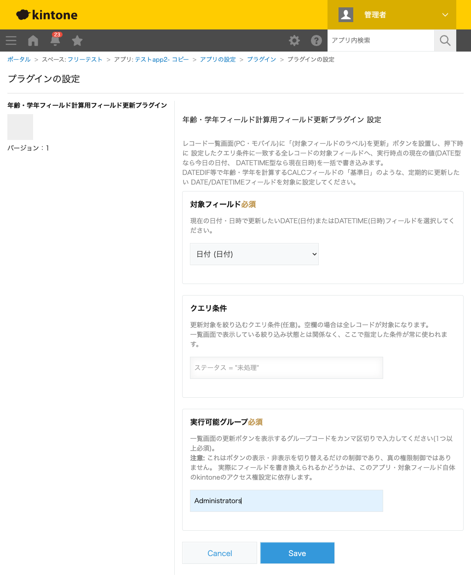

GovAppsプラグイン 安全性を確認できる無料kintoneプラグイン集
レコード一覧画面(PC・モバイル)のボタン押下で、設定したクエリ条件に一致する全レコードの
DATE(日付)またはDATETIME(日時)フィールドへ値を一括で書き込むプラグインです。確認ダイアログには
「今日」を初期値とした編集可能な入力欄が表示されるため、必要なら別の日付・日時に変更してから
実行できます。DATEDIF(生年月日, 基準日, "Y")のように年齢・学年を計算するCALCフィールドの
「基準日」を定期的に「今日の日付」へ更新したい場合に使えます。
生年月日から年齢・学年を計算するCALCフィールドは、基準日をDATE/DATETIMEフィールド(固定値として保存)にしていると、時間の経過とともに古い基準日のままになり、計算結果が更新されなくなります。このプラグインで基準日フィールドを一覧画面のボタン1つで対象レコードすべて「今日の日付」に更新できるため、定期的な一括更新作業を簡単にできます。
設定画面でクエリ条件(任意)を指定すると、一覧画面の現在の絞り込み状態とは関係なく、常に同じ対象レコード集合を一括更新できます。また、実行可能グループを指定することで、一覧画面のボタン自体を特定グループのメンバーにだけ表示できます(ただし表示・非表示の切り替えに過ぎず、実際の書き込み可否はアプリ・フィールドのアクセス権設定に依存します)。
一覧画面のボタンを押すと、対象レコード数・書き込み先フィールド名を示す確認ダイアログが表示され、書き込む値は「今日」を初期値とした入力欄で確認・変更できます。実行すると、対象レコードへ入力欄の値が一括で書き込まれ、完了後に対象件数・成功件数・(リビジョン競合による)スキップ件数が表示されます。対象レコードが0件の場合は確認ダイアログを出さず、その旨だけを通知します。
kintoneセキュアコーディングガイドラインに沿って実装時にチェックしています。特に重要な点は次のとおりです。
POST/GET /k/v1/records/cursor.json)を使い、書き戻しはPUT /k/v1/records.jsonを100件ずつのバッチで送信します。バッチ全体が失敗した場合のみ1件ずつの個別送信にフォールバックし、リビジョン競合(他ユーザーによる同時編集)が起きたレコードだけをスキップして他のレコードの処理は継続します。REST API呼び出しはすべてkintone.api()(kintone自身への呼び出し専用の内部ラッパー)経由で、外部サーバーへの通信は一切行いません。totalCount)から取得し、確認前にレコード本体を取得することはありません。kintone.user.getGroups())は、あくまでUI上の表示・非表示を切り替える機能であり、真の権限境界ではありません。実際に書き込みできるかどうかは、対象アプリ・対象フィールド自体のkintone標準のアクセス権設定に委ねられます(設定画面にも明記しています)。innerHTMLではなくtextContentを使用しており、ユーザー入力(クエリ条件・グループコード)をHTML要素として出力することはありません。詳細な確認項目・確認日は下記GitHubのチェックリストに全項目を掲載しています。

このプラグインは、一覧画面のボタンを押すたびに、対象レコードを列挙するレコードカーソルAPI
(POST/GET/DELETE /k/v1/records/cursor.json)を実行し、
続けて対象フィールドへの書き戻し(PUT /k/v1/records.json、100件を超える場合は複数回、
リビジョン競合時は個別送信PUT /k/v1/record.jsonへフォールバック)を実行します。
確認ダイアログの表示のみで実行をキャンセルした場合は、カーソル作成(件数確認用)の1回のみで
レコード本体の取得・書き戻しは行われません。